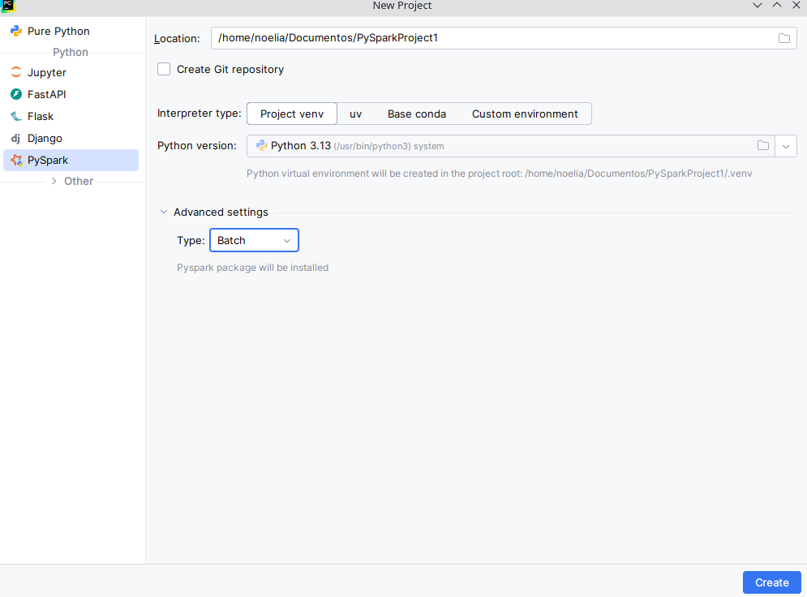
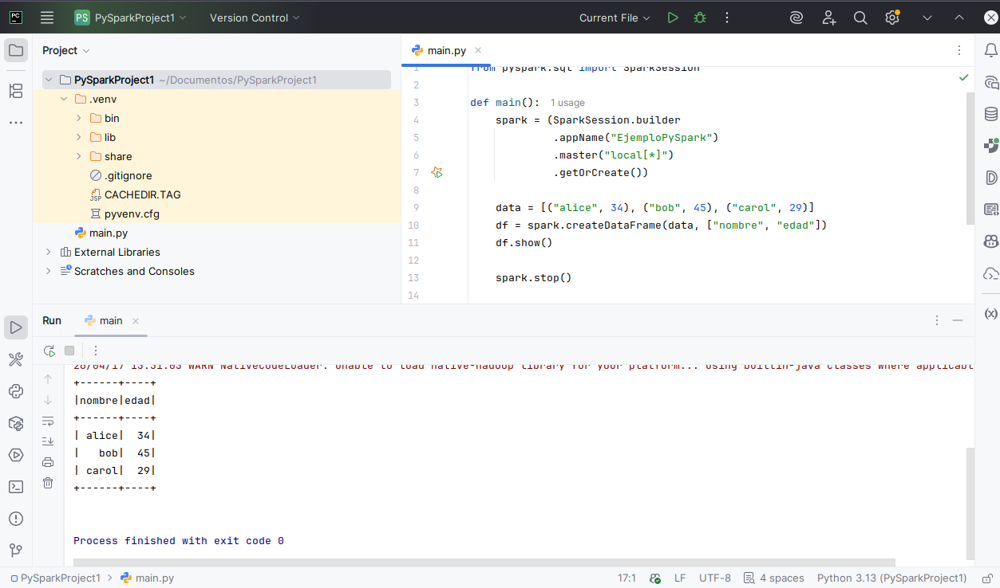

Inicialización de Spark en Scala y Python
DESCRIPCIÓN
La inicialización de Apache Spark es el proceso mediante el cual el programa Driver prepara el entorno para ejecutar tareas de forma distribuida. En versiones modernas de Spark (2.0+), el punto de entrada recomendado es SparkSession, que unifica funcionalidades de Spark Core y Spark SQL (además de integrarse con Structured Streaming y MLlib). Internamente, al crear una SparkSession se crea (o reutiliza) un SparkContext, que es la conexión real con el clúster y el núcleo de ejecución.
En esta lección se muestran ejemplos equivalentes en Scala y Python (PySpark), incluyendo ejecución mediante spark-submit, buenas prácticas y un ejercicio propuesto.
INICIALIZACIÓN EN SCALA
En Scala, la forma moderna de inicializar Spark es mediante SparkSession.builder(). Este patrón permite definir el nombre de la aplicación, el modo de ejecución (master) y parámetros de configuración.
import org.apache.spark.sql.SparkSession
object App {
def main(args: Array[String]): Unit = {
val spark = SparkSession.builder()
.appName("aplicacion-Spark-Scala")
.master("local[*]") // Alternativas: "spark://spark-master:7077", "yarn", "k8s://..."
.getOrCreate()
// Acceso al SparkContext si se necesita trabajar a bajo nivel (RDD)
val sc = spark.sparkContext
// Ejemplo rápido
val df = spark.range(1, 101).toDF("n")
df.show(5)
spark.stop()
}
}En entornos de clúster, ciertos parámetros influyen directamente en el rendimiento y en la asignación de recursos.
val spark = SparkSession.builder()
.appName("aplicacion-Scala-Config")
.master("spark://spark-master:7077")
.config("spark.executor.instances", "2")
.config("spark.executor.cores", "2")
.config("spark.executor.memory", "2g")
.config("spark.sql.shuffle.partitions", "200")
.getOrCreate()Aunque no es lo recomendado en proyectos modernos, puede ser útil para explicar la evolución histórica de Spark: SparkContext fue el punto de entrada original (Spark 1.x), especialmente orientado al uso de RDDs.
import org.apache.spark.{SparkConf, SparkContext}
val conf = new SparkConf()
.setAppName("Legacy-Scala")
.setMaster("local[*]")
val sc = new SparkContext(conf)
val rdd = sc.parallelize(1 to 100)
println(rdd.sum())
sc.stop()import org.apache.spark.sql.SparkSession
object App {
def main(args: Array[String]): Unit = {
val spark = SparkSession.builder().appName("ScalaApp").master("local[*]").getOrCreate()
val df = spark.read.json("data/example.json")
df.show()
spark.stop()
}
}
spark-submit \
--class App \
--master spark://spark-master:7077 \
target/scala-2.12/miapp.jarEn este modo, Spark lanzará el Driver y coordinará la creación de executors según el cluster manager y la configuración establecida.
INICIALIZACIÓN EN PYTHON (PySpark)
En PySpark, la inicialización recomendada también se realiza con SparkSession.builder. El acceso al
SparkContext está disponible desde spark.sparkContext.
from pyspark.sql import SparkSession
spark = (
SparkSession.builder
.appName("app-Spark-Python")
.master("local[*]") # Alternativas: "spark://spark-master:7077", "yarn", "k8s://..."
.getOrCreate()
)
sc = spark.sparkContext # acceso al SparkContext (RDD / APIs de bajo nivel)
df = spark.range(1, 101).toDF("n")
df.show(5)
spark.stop()spark = (
SparkSession.builder
.appName("app-PySpark-Config")
.master("spark://spark-master:7077")
.config("spark.executor.instances", "2")
.config("spark.executor.cores", "2")
.config("spark.executor.memory", "2g")
.config("spark.sql.shuffle.partitions", "200")
.getOrCreate()
)Este enfoque se utiliza principalmente en ejemplos centrados en RDDs o en compatibilidad con proyectos antiguos. Para proyectos modernos, se recomienda SparkSession.
from pyspark import SparkConf, SparkContext
conf = SparkConf().setAppName("Legacy-Python").setMaster("local[*]")
sc = SparkContext(conf=conf)
rdd = sc.parallelize(range(1, 101))
print(rdd.sum())
sc.stop()Ejecución (spark-submit)
Con spark-submit puedes lanzar la aplicación especificando el modo de ejecución (master) desde la línea de comandos. Es una práctica habitual centralizar el master en el submit para evitar inconsistencias.
spark-submit --master local[*] mi_app.pyEjemplo para un clúster Standalone (típico en Docker Compose):
spark-submit --master spark://spark-master:7077 mi_app.pyCREACIÓN DE UN PROYECTO SPARK EN PYCHARM
Crear un proyecto Spark en Pycharm (déspues de haber instalado todos los plugins), es tan sencillo como ir a "Archivo-> New Proyect" y seleccionar Spark

Imagen 1: Selección de proyecto en Pycharm
Vamos a ejecutar el siguiente código de prueba:
from pyspark.sql import SparkSession
def main():
spark = (SparkSession.builder
.appName("EjemploPySpark")
.master("local[*]")
.getOrCreate())
data = [("alice", 34), ("bob", 45), ("carol", 29)]
df = spark.createDataFrame(data, ["nombre", "edad"])
df.show()
spark.stop()
if __name__ == "__main__":
main()
Imagen 2: Salida de la ejecución del sccript anterior
BUENAS PRÁCTICAS
- Facilita la integración con DataFrames, SQL, Streaming y MLlib.
- Evita fragmentación de contextos (SQLContext, HiveContext, etc.).
- Utiliza
getOrCreate()para reutilizar la sesión existente. - En general, un proceso Driver debe tener una única sesión activa.
- Siempre ejecutar
spark.stop()para liberar recursos del clúster. - En Docker, esto ayuda a evitar procesos colgados o recursos bloqueados.
Reducir el ruido de logs mejora la trazabilidad en notebooks o durante pruebas:
# Python
spark.sparkContext.setLogLevel("WARN")// Scala
spark.sparkContext.setLogLevel("WARN")- Si trabajas con despliegue formal (scripts/JAR), define el master en
spark-submit. - Evita duplicidad/confusión entre parámetros del builder y parámetros del submit.